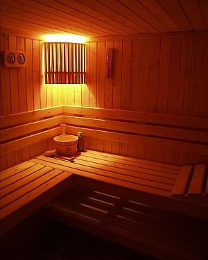
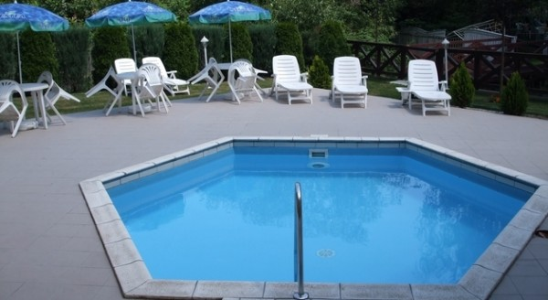
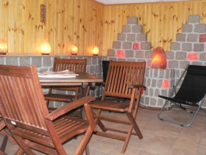
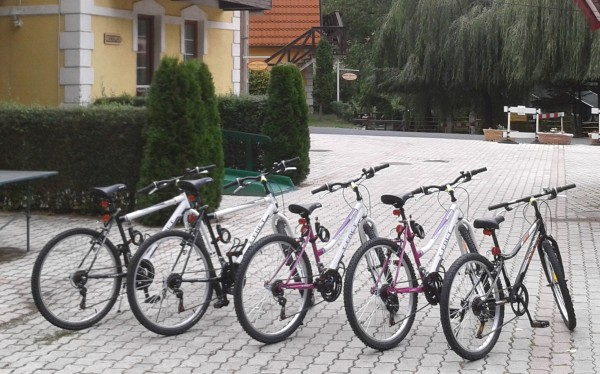
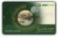

A Hotel Szeleta*** szolgáltatásai
Reggeli
7:00-től 9:30-ig svédasztalos rendszerben fogyasztható a bőséges reggeli, melyet a szobaár tartalmaz.
Szauna
Finn szauna a Hotel Szeletában A Hotel rendelkezik finn szaunával, melyet 14 és 22 óra között minden szállóvendég díjmentesen használhat. Az 5-6 fő befogadására alkalmas szauna előterében a zuhanyzók és az öltöző szekrények biztosítottak. A bejárat előtt lévő hideg vizes medence merülő medenceként teszi teljesebbé a szaunázás élményét. A finn szauna jótékony hatásai: Segíti a szervezetet a salakanyagok kiürítésében hatékony immunerősítő és érregeneráló hatású a gőzfürdővel ellentétben nem termelődnek, hanem elpusztulnak a baktériumok, vírusok javítja az anyagcsere folyamatokat fokozza a szervezet vérellátását segít a lappangó betegségek felszínre hozásában, legyőzésében a hőfokváltozás edzi a bőrt, élénkíti testet, szellemet, erősíti idegrendszerünket illóolajjal fokozhatjuk a meghűléses betegségekkel szembeni gyógyhatását a finn szauna vízveszteséget okoz, valamint felgyorsítja vérkeringésünket.
Medence
A vízforgatóval felszerelt kültéri medence szezonális jelleggel várja a hűsölésre vágyó vendégeket. Az 5 méter átmérőjű, 1 méter mély medence főleg a gyermekek részére nyújt igazi élményt, de a medence körül elhelyezett napozóágyakon a felnőttek is kellemesen kikapcsolódhatnak a pár méterre lévő Szinva patak halk csobogására.
Sókamra
A szálloda recepciója alatt található a mesterségesen kialakított „sóbarlang”, mely az egészségre jótékony hatásai mellett, a nyári hónapokban – pinceklímájának köszönhetően – kellemes felfrissülést biztosít. Az ajánlott terápiás időtartam: 30-40 perc/alkalom. Sókamra a Hotel Szeleta recepciója alattA sókamra jótékony hatásai: Tisztítja a tüdőt és a légutakat segít a felső- és alsó légúti bántalmak leküzdésében javasolt bőr-, idegrendszeri problémákban szenvedőknek immunrendszer erősítésére is alkalmas elősegíti a dohányzásról való leszokást gyorsítja a szervezet öntisztulását, megkönnyebbülést okoz a csend és az elszeparáltság segít ellazulni, relaxálni.
Kerékpár bérlés
A Hotel Szeleta legújabb szolgáltatásaként lehetőség van a képen látható kerékpárokat kibérelni. Fedezzék fel Lillafüredet és környezetét, Miskolc belvárosát, vagy a sportosabbak akár a 20 km-re fekvő Miskolc-Tapolcát 2 keréken. Sajnos jelenleg Alsóhámorig nincs kiépítve a bicikliút, de a tőlünk Miskolc irányába kb. 4 km-re található Papírgyártól, már kerékpárúton juthatnak el Miskolc belvárosába, vagy akár Tapolcáig. A biciklik különböző vázméretűek, hogy mindenki megtalálja a magának megfelelőt. A kerékpárok bérleti díja 3.000.- Ft./nap(max.: 8:00-20:00-ig) biciklinként. Kerékpáronként 5.000- Ft. a kaució, mely a bicikli visszavételekor visszajár, amennyiben az átadáskori állapotnak megfelelően kapjuk vissza a kerékpárt. A kerékpárokat 8 és 20 óra között lehet bérelni. 12. életévét betöltött bérelhet biciklit, de fiatalkorú csak felnőtt kísérővel. Részletek a recepción.
Pihenőkert-játszótér
A hotel területén tágas parkosított kert fedezhető fel, mely végét a Szinva patak halkan morajló vízesése választja el az erdőtől. A park számos kikapcsolódási lehetőséget biztosít: Játszótér és pihenőpark: ping-pong, tollaslabda, mini foci lehetőséggel Játszótér:a kertben a gyermekek szórakozására játszóteret alakítottunk ki, ahol csúszda, hinta, valamint homokozó várja őket. A szülőknek 8 fő befogadására alkalmas szanetli van elhelyezve a játszótéren. A balesetek elkerülése érdekében a játszóteret kizárólag 12 éven aluliak vehetik igénybe, szülői felügyelet mellett. Pingpong:rendelkezünk pingpongasztallal és a sporthoz szükséges valamennyi eszközökkel. Mini foci: a pihenőkertben található a 9×16 m-es mini foci pálya a futball szerelmesei részére. Tollaslabda: a kertben tollasozásra is nyílik lehetőség. Sporteszközök a szálloda recepcióján vehetők át. Természetesen a szálloda területén a vendégek saját eszközeiket is használhatják (pingpong, tollas, foci, stb.).
Bababarátbababarat
Előzetes kérésre díjmentesen biztosítunk a szobákba utazóágyat, illetve fürdetőkádat a babák részére. A reggeliző helyiségben etetőszékek állnak rendelkezésre, valamint mikrohullámú sütő is található a bébi étel melegítésére, amit napközben a recepción is kérhetnek. A szállodai televíziókba – lehetőség szerint – programozva van mesecsatorna.
Parkoló
A Hotel Szeleta épületei körül több mint 25 gépkocsi parkolóhely található. A nem fedett helyeken akár autóbusz is tud parkolni. Kialakítása: térkövezett, kivilágított, részben fedett parkoló. 1 szobafoglaláshoz – a Hotel Szeleta előzetes engedélyének a hiányában – maximum 1 személygépkocsi vagy 2 motorkerékpár részére tudunk díjmentes parkolást biztosítani a Hotel területén. Autóbusz, illetve mikrobusz részére kizárólag előzetes megállapodást követően tudunk parkolást biztosítani.
Pihenés ajándékba!
Ajándékozzon szállást!Lepje meg kedvesét, rokonát, ismerősét a Hotel Szeleta ajándék kuponjával. Teendője annyi csupán, hogy az Ajánlat/Foglalás menüpontban lévő táblázat kitöltése után a megjegyzés rovatban feltünteti, hogy ajándékba lesz, valamint az ajándékozott(ak) nevét. A kiválasztott szállás díját – Idegenforgalmi Adóval növelve – banki átutalással vagy SZÉP kártyával eljuttatja a Hotel Szeleta részére. Az összeg megérkezésével a foglalónak, e-mailben megküldjük a számlát, és a névre szóló ajándékkupont.
Különterem
A hotel 35 m2-es, 35-40 fő befogadására alkalmas házimozival, videóval, projektorral, WiFi Internet kapcsolattal, 2 db flipcharttal, szociális helyiségekkel felszerelt klimatizált különtermet tud biztosítani a hozzá kapcsolódó külső terasszal és parkkal tréningek, üzleti tárgyalások, családi rendezvények megrendezése céljából. Igény esetén vállaljuk ásványvíz, üdítő, pogácsa, édes sütemény, tea, kávé, capuccino bekészítését. A termet – reggeliztetés miatt – legkorábban délelőtt 11 órától lehet igénybe venni. A terem, illetve a bekészítés díjáról az ajánlatkérésre való válaszunkban tudunk tájékoztatást adni.




Elfogadott kártyatípusok
